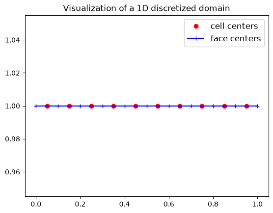
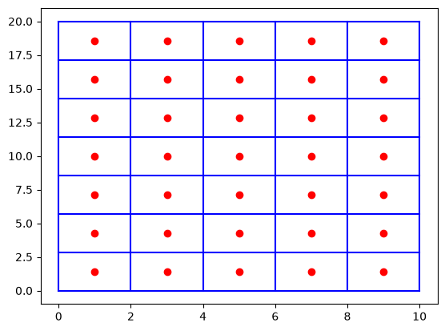
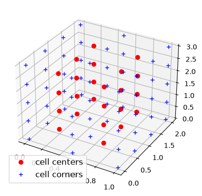
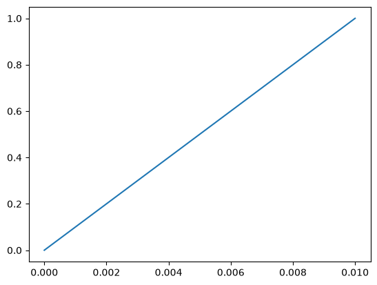
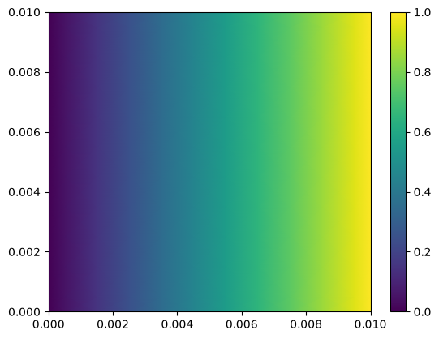
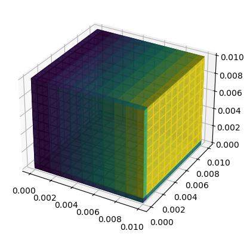
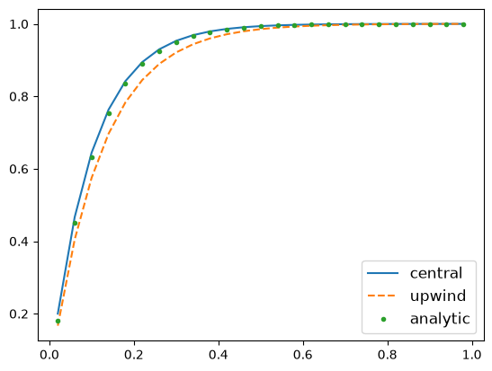
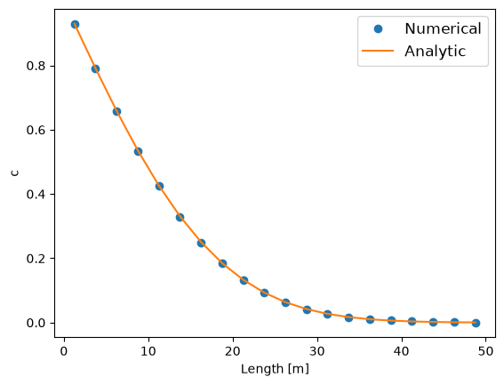
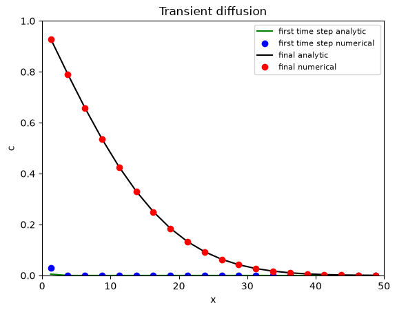
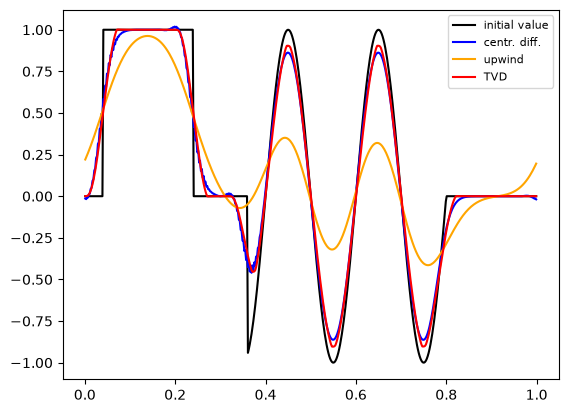

An introductory demonstration of PyFVTool¶
The general form of the partial differential equations solved in PyFVTool is
with general boundary conditions
.
PyFVTool works in a standard scientific Python environment, so make NumPy and Matplotlib available.
[1]:
import matplotlib.pyplot as plt
import numpy as np
[2]:
# import the error function from scipy
from scipy.special import erf
The recommended way of importing PyFVTool is to use pf as the shortcut.
[3]:
import pyfvtool as pf
Create a 1D mesh and visualize it¶
The simplest mesh is the Cartesian 1D grid, an example of which will be created here.
The mesh-structure object is created via the Grid1D class.
[4]:
L = 1.0 # length of the domain
Nx = 10 # number of cells in the domain
[5]:
m = pf.Grid1D(Nx, L) # mesh-structure
We can have a look at the structure of the mesh that was created.
The _x, _y, _z are the coordinate labels used internally by PyFVTool. These are not intended to be used directly by the user.
The coordinate labels for the user are given in the coordlabels dictionary. In this particular Grid1D case, the user x label maps to the internal _x label. The other coordinates are not used, as the mesh is one-dimensional.
[6]:
print(m)
dims: [10]
cellsize: _x: [0.1 0.1 0.1 0.1 0.1 0.1 0.1 0.1 0.1 0.1 0.1 0.1]
_y: [0.]
_z: [0.]
coordlabels: {'x': '_x'}
cellcenters: _x: [0.05 0.15 0.25 0.35 0.45 0.55 0.65 0.75 0.85 0.95]
_y: [0.]
_z: [0.]
coordlabels: {'x': '_x'}
facecenters: _x: [0. 0.1 0.2 0.3 0.4 0.5 0.6 0.7 0.8 0.9 1. ]
_y: [0.]
_z: [0.]
coordlabels: {'x': '_x'}
corners: [1]
edges: [1]
1D meshes can be created in two ways because the function is overloaded, as shown in the help docstring.
[7]:
help(pf.Grid1D)
Help on class Grid1D in module pyfvtool.mesh:
class Grid1D(MeshStructure)
| Grid1D(*args)
|
| Mesh based on a 1D Cartesian grid (x)
| =====================================
|
| This class can be instantiated in different ways: from a list of cell face
| locations or from the number of cells and domain length.
|
| Instantiation Options:
| ----------------------
| - Grid1D(Nx, Lx)
| - Grid1D(face_locationsX)
|
|
| Parameters
| ----------
| Grid1D(Nx, Lx)
| Nx : int
| Number of cells in the x direction.
| Lx : float
| Length of the domain in the x direction.
|
| Grid1D(face_locationsX)
| face_locationsX : ndarray
| Locations of the cell faces in the x direction.
|
| Examples
| --------
| >>> import numpy as np
| >>> from pyfvtool import Grid1D
| >>> mesh = Grid1D(10, 10.0)
| >>> print(mesh)
|
| Method resolution order:
| Grid1D
| MeshStructure
| builtins.object
|
| Methods defined here:
|
| __init__(self, *args)
| Initialize self. See help(type(self)) for accurate signature.
|
| __repr__(self)
| Return repr(self).
|
| cell_numbers(self)
|
| ----------------------------------------------------------------------
| Methods inherited from MeshStructure:
|
| __str__(self)
| Return str(self).
|
| ----------------------------------------------------------------------
| Readonly properties inherited from MeshStructure:
|
| cellvolume
|
| ----------------------------------------------------------------------
| Data descriptors inherited from MeshStructure:
|
| __dict__
| dictionary for instance variables
|
| __weakref__
| list of weak references to the object
[8]:
# 1D, 2D, 3D, 1D radial (axial symmetry), and 2D cylindrical grids can be constructed:
# help(pf.Grid1D)
# help(pf.Grid2D)
# help(pf.Grid3D)
# help(pf.CylindricalGrid1D)
# help(pf.CylindricalGrid2D)
[9]:
# Visualize the 1D discretization that we created above
hfig, ax = plt.subplots(1,1, num='Grid discretization')
ax.plot(m.cellcenters.x, np.ones(np.shape(m.cellcenters.x), dtype=float), 'or', label='cell centers')
ax.plot(m.facecenters.x, np.ones(np.shape(m.facecenters.x), dtype=float), '-+b', label='face centers')
plt.legend(fontsize=12, loc='best')
ax.set_title('Visualization of a 1D discretized domain');

Create a 2D grid and visualize it¶
[10]:
Nx, Ny = 5, 7
Lx, Ly = 10.0, 20.0
m = pf.Grid2D(Nx, Ny, Lx, Ly)
X, Y = np.meshgrid(m.cellcenters.x, m.cellcenters.y, indexing='ij')
Xf, Yf = np.meshgrid(m.facecenters.x, m.facecenters.y, indexing='ij')
plt.figure()
plt.plot(X, Y, 'or', label='nodes')
plt.plot(Xf, Yf, 'b-', label='faces (west/east)')
plt.plot(Xf.T, Yf.T, 'b-', label='faces (north/south)');

Create a 3D grid and visualize it¶
[11]:
Nx, Ny, Nz = 2, 3, 4
Lx, Ly, Lz = 1.0, 2.0, 3.0
m = pf.Grid3D(Nx, Ny, Nz, Lx, Ly, Lz)
We can obtain information of the positions of the cell centers.
As can be seen, the user coordinate labels x, y and z map internally to _x, _y, _z. The correspondence is trivial in this case, but this is not so in the case of cylindrical or spherical coordinates.
[12]:
m.cellcenters
[12]:
_x: [0.25 0.75]
_y: [0.33333333 1. 1.66666667]
_z: [0.375 1.125 1.875 2.625]
coordlabels: {'x': '_x', 'y': '_y', 'z': '_z'}
The (compact) information on the cell centers can be converted into a full grid in the following way.
[13]:
X, Y, Z = np.meshgrid(m.cellcenters.x,
m.cellcenters.y,
m.cellcenters.z,
indexing='ij')
Xf, Yf, Zf = np.meshgrid(m.facecenters.x,
m.facecenters.y,
m.facecenters.z,
indexing='ij')
[14]:
# Plot the 3D grid
# TO DO: make this interactive! this will require ipywidgets
# This can probably only be done once these Notebooks are not used as pytest tests anymore.
# The Notebooks used for tests should be converted to simple test scripts, and the Notebooks
# can then simply be used as examples.
hfig = plt.figure()
ax = plt.axes(projection='3d')
ax.plot3D(X.flatten(), Y.flatten(), Z.flatten(), 'ro', label='cell centers')
ax.plot3D(Xf.flatten(), Yf.flatten(), Zf.flatten(), 'b+', label='cell corners')
ax.legend(fontsize=12, loc='best');

Boundary conditions¶
One of the most important features of PyFVTool is the ability to implement different boundary conditions (BCs) for variables in the most convenient way.
The implementation of BCs in PyFVTool enables the user to define either a periodic boundary condition or a general boundary condition of the following form:
In the above equation, \(\phi\) is the unknown, and \(a\), \(b\), and \(c\) are constants. In practice, this boundary condition equation will be discretized to the following system of algebraic equations:
By adjusting the values of \(a\), \(b\) and \(c\), one of the following well-known types of boundary conditions can easily be defined:
Neumann (\(a\) is nonzero; \(b\) is 0)
Dirichlet (\(a\) is zero; \(b\) is nonzero)
Robin (\(a\) and \(b\) are both nonzero)
First, let’s create a simple mesh again.
[15]:
Nx = 10 # number of cells in the domain
Lx = 1.0 # length of the domain
m = pf.Grid1D(Nx, Lx) # createMesh and createMesh are identical
Then, on this mesh, we will define a solution variable, via the CellVariable class. We will initialize its value to be 0.0 everywhere.
[16]:
phi = pf.CellVariable(m, 0.0)
The CellVariable object carries with it boundary conditions, that have been created by default. These boundary conditions will be applied by PyFVTool where required.
Let’s have a look at the BC structure.
This also prints info on the mesh, which may be a bit confusing.
[17]:
print(phi.BCs) # display the BC structure
domain : dims: [10]
cellsize: _x: [0.1 0.1 0.1 0.1 0.1 0.1 0.1 0.1 0.1 0.1 0.1 0.1]
_y: [0.]
_z: [0.]
coordlabels: {'x': '_x'}
cellcenters: _x: [0.05 0.15 0.25 0.35 0.45 0.55 0.65 0.75 0.85 0.95]
_y: [0.]
_z: [0.]
coordlabels: {'x': '_x'}
facecenters: _x: [0. 0.1 0.2 0.3 0.4 0.5 0.6 0.7 0.8 0.9 1. ]
_y: [0.]
_z: [0.]
coordlabels: {'x': '_x'}
corners: [1]
edges: [1]
left : _a : [1.]
_b : [0.]
_c : [0.]
_periodic : False
right : _a : [1.]
_b : [0.]
_c : [0.]
_periodic : False
bottom : _a : []
_b : []
_c : []
_periodic : False
top : _a : []
_b : []
_c : []
_periodic : False
back : _a : []
_b : []
_c : []
_periodic : False
front : _a : []
_b : []
_c : []
_periodic : False
For simplicity, display only information for the left boundary, and then only information for the right boundary.
[18]:
print("Left BC")
print(phi.BCs.left) # a non-zero, b and c == 0, --> homogeneous Neumann BC at left boundary
print()
print("Right BC")
print(phi.BCs.right) # same as left boundary --> homogeneous Neumann BC at right-boundary
Left BC
_a : [1.]
_b : [0.]
_c : [0.]
_periodic : False
Right BC
_a : [1.]
_b : [0.]
_c : [0.]
_periodic : False
Both the left and right BCs have the same values for \(a\), \(b\) and \(c\). These are the default BCs that are created: Neumann-style BCs with a zero value of the derivative at the boundary. Such BCs are also called “zero flux boundary conditions”.
Boundary conditions can be adapted “on the fly”.
[19]:
phi.BCs.left.a = 0.0
phi.BCs.left.b = 1.0 # homogeneous Dirichlet boundary condition
phi.BCs.left.c = 0.0
# Periodic boundary conditions override the other settings (take precedence)
phi.BCs.left.periodic = True
print(phi.BCs.left)
_a : [0.]
_b : [1.]
_c : [0.]
_periodic : True
For boundary condition structures created for 2D and 3D grids, we will have left, right, bottom, top, back, and front boundaries and thus substructures. Let me show them to you in action:
[20]:
m = pf.Grid2D(3, 4, 1.0, 2.0) # Nx, Ny, Lx, Ly
phi = pf.CellVariable(m, 0.0)
print(phi.BCs)
domain : dims: [3 4]
cellsize: _x: [0.33333333 0.33333333 0.33333333 0.33333333 0.33333333]
_y: [0.5 0.5 0.5 0.5 0.5 0.5]
_z: [0.]
coordlabels: {'x': '_x', 'y': '_y'}
cellcenters: _x: [0.16666667 0.5 0.83333333]
_y: [0.25 0.75 1.25 1.75]
_z: [0.]
coordlabels: {'x': '_x', 'y': '_y'}
facecenters: _x: [0. 0.33333333 0.66666667 1. ]
_y: [0. 0.5 1. 1.5 2. ]
_z: [0.]
coordlabels: {'x': '_x', 'y': '_y'}
corners: [ 0 24 5 29]
edges: [1]
left : _a : [1. 1. 1. 1.]
_b : [0. 0. 0. 0.]
_c : [[0. 0. 0. 0.]]
_periodic : False
right : _a : [1. 1. 1. 1.]
_b : [0. 0. 0. 0.]
_c : [0. 0. 0. 0.]
_periodic : False
bottom : _a : [1. 1. 1.]
_b : [0. 0. 0.]
_c : [0. 0. 0.]
_periodic : False
top : _a : [1. 1. 1.]
_b : [0. 0. 0.]
_c : [0. 0. 0.]
_periodic : False
back : _a : []
_b : []
_c : []
_periodic : False
front : _a : []
_b : []
_c : []
_periodic : False
[21]:
print(phi.BCs.top)
_a : [1. 1. 1.]
_b : [0. 0. 0.]
_c : [0. 0. 0.]
_periodic : False
Yes, that’s right. a, b, and c are vectors. It means that you can have different boundary conditions for different cell faces at each boundary. For instance, I can have a Neumann boundary condition for the first cell and a Dirichlet boundary condition for the last cell at the top boundary:
[22]:
# homogeneous Neumann
phi.BCs.top.a[0] = 1.0
phi.BCs.top.b[0] = 0.0
phi.BCs.top.c[0] = 0.0
# homogeneous Dirichlet
phi.BCs.top.a[-1] = 0.0
phi.BCs.top.b[-1] = 1.0
phi.BCs.top.c[-1] = 0.0
[23]:
# Some fancy display!
print(' a b c (top)')
print('---------------')
print(np.hstack((np.atleast_2d(phi.BCs.top.a).T,
np.atleast_2d(phi.BCs.top.b).T,
np.atleast_2d(phi.BCs.top.c).T)))
# top. a b c
# ---------------
# 1 0 0
# 1 0 0
# 0 1 0
a b c (top)
---------------
[[1. 0. 0.]
[1. 0. 0.]
[0. 1. 0.]]
The same procedure can be followed for a 3D grid. However, \(a\), \(b\), and \(c\) values are 2D matrices for a 3D grid. This will be discussed in more details when we reach the practical examples.
[24]:
phi.BCs.right.a = 0.0
phi.BCs.right.b = 1.0
phi.BCs.right.c = 0.0
print(' a b c (right)')
print('---------------')
print(np.hstack((np.atleast_2d(phi.BCs.right.a).T,
np.atleast_2d(phi.BCs.right.b).T,
np.atleast_2d(phi.BCs.right.c).T)))
a b c (right)
---------------
[[0. 1. 0.]
[0. 1. 0.]
[0. 1. 0.]
[0. 1. 0.]]
Solve a diffusion equation¶
As the first example, we solve a steady-state diffusion equation of the following form
where \(D\) is the diffusivity and \(c\) is the concentration. Let me assume that we have a 1D domain, with Dirichlet boundary conditions at both boundaries, i.e., at \(x\)=0, \(c\)=1; and at \(x\)=\(L\), \(c\)=0. First of all, we need to define our domain, discretize it, and define the boundaries at the borders.
Note: This is a boundary value problem and we will be solving for the steady-state solution, without any transient term.
First create a 1D Cartesian grid and a solution variable called c.
[25]:
L = 0.01 # a 1 cm domain
Nx = 10 # number of cells
m = pf.Grid1D(Nx, L)
c = pf.CellVariable(m, 0.0)
Now switch from the default ‘no flux’ boundary conditions to Dirichlet conditions, on both sides of the domain.
[26]:
# left boundary
c.BCs.left.a = 0.0
c.BCs.left.b = 1.0
c.BCs.left.c = 0.0
# right boundary
c.BCs.right.a = 0.0
c.BCs.right.b = 1.0
c.BCs.right.c = 1.0
print(c.BCs.left)
print(c.BCs.right)
_a : [0.]
_b : [1.]
_c : [0.]
_periodic : False
_a : [0.]
_b : [1.]
_c : [1.]
_periodic : False
The next step is to define the diffusion coefficient. In this FVTool, the physical properties of the domain are defined for each cell, again as a CellVariable object.
Remark. This variable is not a solution variable, and even though the CellVariable will internally contain a default BCs structure, these ‘dummy’ boundary conditions will of course not be used, are of no consequence and can be forgotten.
[27]:
D = pf.CellVariable(m, 1e-5) # assign a constant value of 1e-5 to diffusivity value on each cell
However, the diffusion coefficients must be known on the face of each cell.
To obtain the values at the faces from the values at the centers, we have a few typical FVM averaging schemes at our disposal. For a 1D domain, we can use a harmonic mean scheme.
Notes:
this “averaging” is actually an interpolation. It takes the nearest neighbor harmonic mean
the harmonic mean skews towards outliers with small values
[28]:
D_face = pf.harmonicMean(D) # average diffusivity value on the cell faces.
Now, we can convert the PDE to a, algebraic system of linear equations, i.e. a matrix equation to be solved.
\(\mathbf{M}\) is the matrix of coefficients that is going to be constructed by PyFVTool, on basis of the finite-volume formulation. In this manner, PyFVTool will also construct the vector \(\textrm{rhs}\) which is commonly called the right-hand side.
\(\mathbf{M}\) and \(\textrm{rhs}\) will be constructed from the definition of the solution variable, in particular its boundary conditions, and (in this case) from the diffusion term. The latter will be placed in a list of equation terms that will be supplied to the solver function solvePDE(). If you look at it in detail, pf.diffusionTerm() creates a matrix that will be added to the overall matrix \(\mathbf{M}\) for the matrix equation. This provides a mechanism for adding
several different terms (diffusion, advection/convection, source/reaction) to the equation.
solvePDE() will take care of constructing the matrix equation, and then calling the numerical (sparse matrix) solver.
The vector \(\mathbf{c}\) will contain the finite-volume cell values of the concentration as the numerical solution of the matrix equation.
[29]:
eqnterms = [-pf.diffusionTerm(D_face)]
[30]:
pf.solvePDE(c, eqnterms);
[31]:
# visualize the solution
plt.figure()
pf.visualizeCells(c)

Just to get excited a little bit, only change the mesh definition command from Grid1D(Nx,L) to Grid2D(Nx,Nx,L,L), run the code and see what happens.
[32]:
# 2D
L = 0.01 # a 1 cm domain
Nx = 10 # number of cells
m = pf.Grid2D(Nx, Nx, L, L)
c = pf.CellVariable(m, 0.0)
# Now switch from Neumann boundary conditions to Dirichlet conditions:
# left boundary: homogeneous Dirichlet left-side
c.BCs.left.a, c.BCs.left.b, c.BCs.left.c = 0.0, 1.0, 0.0
# right boundary: inhomogeneous Dirchlet right-side
c.BCs.right.a, c.BCs.right.b, c.BCs.right.c = 0.0, 1.0, 1.0
# Create a face-variable for the diffusion coefficient
D = pf.CellVariable(m, 1e-5) # define the diffusivity
D_face = pf.harmonicMean(D) # interpolate to face positions
# Solve the problem in 2D
eqnterms = [-pf.diffusionTerm(D_face)]
pf.solvePDE(c, eqnterms)
# Visualize the solution
plt.figure()
pf.visualizeCells(c)
plt.colorbar();

For even more excitement, change to Grid3D(Nx,Nx,Nx,L,L,L)!
[33]:
# 3D
L = 0.01 # a 1 cm domain
Nx = 10 # number of cells
m = pf.Grid3D(Nx, Nx, Nx, L, L, L)
c = pf.CellVariable(m, 0.0)
# Now switch from Neumann boundary conditions to Dirichlet conditions:
# left boundary: homogeneous Dirichlet left-side
c.BCs.left.a, c.BCs.left.b, c.BCs.left.c = 0.0, 1.0, 0.0
# right boundary: inhomogeneous Dirchlet right-side
c.BCs.right.a, c.BCs.right.b, c.BCs.right.c = 0.0, 1.0, 1.0
# Create a face-variable for the diffusion coefficient
D = pf.CellVariable(m, 1e-5) # define the diffusivity
D_face = pf.harmonicMean(D) # interpolate to face positions
# Solve the problem in 3D
eqnterms = [-pf.diffusionTerm(D_face)]
pf.solvePDE(c, eqnterms)
# Visualize the solution
hfig = plt.figure()
# ax = hfig.add_subplot(projection='3d')
pf.visualizeCells(c)
# plt.colorbar()
<Figure size 640x480 with 0 Axes>

This is usually the way we develop new mathematical models for a physical phenomenon. Write the equation, solve it in 1D, compare it to the analytical solution, then solve it numerically in 2D and 3D for more realistic cases with heterogeneous transfer coefficients and other nonidealities (and perhaps compare it to some experimental data)
Solving a steady-state convection-diffusion problem, building up the matrix equation term-by-term¶
This tutorial is adapted from a FiPy convection-diffusion example.
Here, we are going to add a convection term to the equation solved in the previous example. Additionally, we demonstrate a more ‘low level’ approach to setting up the solver, building up the matrix equation step-by-step by adding the relevant terms and finally solving the matrix equation. This gives a better idea how PyFVTool works internally.
The differential equation reads
Here, \(\mathbf{u}\) is a velocity vector (face variable) and \(D\) is the diffusion coefficient (again a face variable). Please see the PDF document for an explanation of cell and face variables. We use Dirichlet (constant value) boundary conditions on the left and right boundaries. It is zero at the left boundary and one at the right boundary. The analytical solution of this differential equation reads
[34]:
# Define the domain and mesh
L = 1.0 # domain length
Nx = 25 # number of cells
meshstruct = pf.Grid1D(Nx, L)
x = meshstruct.cellcenters.x # extract the cell center positions for plotting purposes
[35]:
c = pf.CellVariable(meshstruct, 0.0)
[36]:
# switch the left boundary to homogeneous Dirichlet
c.BCs.left.a, c.BCs.left.b, c.BCs.left.c = 0.0, 1.0, 0.0
c.BCs.right.a, c.BCs.right.b, c.BCs.right.c = 0.0, 1.0, 1.0
[37]:
# Make an identical, separate copy for the upwind calculation
# to ensure independent calculations
c_upwind = c.copy()
[38]:
# Define the transfer coefficients
# Diffusion
D_val = 1.0 # diffusion coefficient value
D = pf.CellVariable(meshstruct, D_val) # assign diff. coeff. to all the cells
Dave = pf.harmonicMean(D) # convert a cell variable to face variable
[39]:
# Convection
u = -10.0 # velocity value
u_face = pf.FaceVariable(meshstruct, u) # assign velocity value to cell faces
[40]:
# solve using the central scheme, updating the CellVariable
pf.solvePDE(c, [ pf.convectionTerm(u_face),
-pf.diffusionTerm(Dave)]);
[41]:
# solve using the upwind scheme
pf.solvePDE(c_upwind, [ pf.convectionUpwindTerm(u_face),
-pf.diffusionTerm(Dave)]);
[42]:
# analytic solution
c_analytical = (1-np.exp(u*x/D_val))/(1-np.exp(u*L/D_val))
[43]:
# visualization
plt.figure()
plt.plot(x, c.value, '-', label='central')
plt.plot(x, c_upwind.value, '--', label='upwind')
plt.plot(x, c_analytical, '.', label='analytic')
plt.legend(fontsize=12, loc='best');

As you see here, we obtain a more accurate result by using a central difference discretization scheme for the convection term compared to the first order upwind.
Solve a transient diffusion equation¶
This example is adapted from the FiPy 1D diffusion example
The transient diffusion equation reads
where \(c\) is the independent variable (concentration, temperature, etc) , \(D\) is the diffusion coefficient, and \(\alpha\) is a constant.
[44]:
# Define the domain and create a mesh structure
L = 50.0 # domain length
Nx = 20 # number of cells
m = pf.Grid1D(Nx, L)
x = m.cellcenters.x # cell centers position
[45]:
# Solution variable
# Define the initial condition
c_init = 0.0
c = pf.CellVariable(m, c_init)
[46]:
# Switch the left and right boundaries to Dirichlet
# left boundary
c.BCs.left.a = 0.0
c.BCs.left.b = 1.0
c.BCs.left.c = 1.0
# right boundary
c.BCs.right.a = 0.0
c.BCs.right.b = 1.0
c.BCs.right.c = 0.0
[47]:
# Define the transfer coefficients:
D_val = 1.0
D = pf.CellVariable(m, D_val)
Dave = pf.harmonicMean(D) # convert it to face variables
# Define alfa, the coefficient of the transient term:
alfa_val = 1.0
alfa = pf.CellVariable(m, alfa_val)
[48]:
# Now define the time step and the final time:
dt = 0.1 # time step
final_t = 100.0
Here, we first create the term matrices that will not change as we progress stepwise in time, i.e. diffusion term. The matrix equation terms (\(\mathbf{M}\) and \(\textrm{rhs}\)) corresponding to the boundary condition are handled automatically by PyFVTool via solvePDE().
[49]:
diffterm = pf.diffusionTerm(Dave) # does not change when stepping in time
The transitionTerm function gives a matrix of coefficient and a RHS vector. The matrix of coefficient does not change in each time step, but the RHS does. Therefore, we need to call the transientTerm() function inside the time loop.
Here’s the time stepping loop:
[50]:
tt = []
ci = []
ca = []
t = 0.
while t < final_t:
transterm = pf.transientTerm(c, dt, alfa) # re-evaluate at each time step
eqnterms = [ transterm,
-diffterm]
pf.solvePDE(c, eqnterms)
t += dt # solution time
tt.append(t)
ci.append(c.copy()) # store all solutions (copy all contents)
ca.append( 1.0-erf(x/(2*np.sqrt(D_val*t)))) # store analytic
[51]:
# Visualize the final results
plt.figure()
plt.plot(x, ci[-1].value, 'o', label='Numerical')
plt.plot(x, ca[-1], '-', label='Analytic')
plt.xlabel('Length [m]')
plt.ylabel('c')
plt.legend(fontsize=12, loc='best');

[52]:
# Plotting and visualization of the 1D transient diffusion solution
hfig1, ax1 = plt.subplots()
ax1.plot(x, ca[0], 'g-', label='first time step analytic')
ax1.plot(x, ci[0].value, 'bo', label='first time step numerical ')
ax1.plot(x, ca[-1], 'k-', label='final analytic')
ax1.plot(x, ci[-1].value, 'ro', label='final numerical')
ax1.set_xlim((0, L))
ax1.set_ylim((0.0, 1.0))
ax1.set_xlabel('x')
ax1.set_ylabel('c')
ax1.set_title('Transient diffusion')
ax1.legend(fontsize=8);

Convection equations; different discretization schemes¶
One special feature of this FVTool to be highlighted is its collection of discretization schemes for a linear convection term, which includes central difference (second order), upwind (first order), and TVD upwind scheme with various flux limiters.
Convective terms in transport PDEs are notoriously difficult to handle numerically, since all discretization schemes for convection display to a certain extent a numerical artefact aptly called “numerical diffusion” (illustrated below). This is sometimes combined with unphysical oscillations appearing in the numerical solution (especially when trying to reduce numerical diffusion). Specific clever numerical schemes have been developed to mitigate both effects, but these come often at increased computational cost.
Here, we are going to compare the performance of several schemes for solving a simple linear transient convection equation with an initial condition containing discontinuities. The discontinuties (or shocks) clearly bring out the numerical diffusion and the oscillations.
We define a simple linear transient convection PDE, with an initial condition having discontinuties,
and periodic boundary conditions on a Cartesian 1D-domain with constant flow velocity coefficients \(u\)=0.3 m/s.
The periodic boundary conditions make that the stuff that goes out on one side of the domain re-enters on the other side (like Pac-Man and the ghosts in the original arcade game). This provides a means to transport by convection the initial condition one complete cycle such that the numerical solution is superposed with the initial condition. In the case of pure 1D convection, the solution after one complete cycle should be identical to the initial condition.
Initial condition:
[53]:
# define a 1D domain and mesh
W = 1.0
Nx = 500
mesh1 = pf.Grid1D(Nx, W)
x = mesh1.cellcenters.x
[54]:
# Set up a variable with initial values and BCs, that can be copied to have
# the same IC and BCs for solving with different numerical schemes
phiinit = pf.CellVariable(mesh1, 0.0)
phiinit.value[(0.04 <= x) & (x < 0.24)] = 1.0
phiinit.value[(0.36 <= x) & (x < 0.8)] = np.sin(x[(0.36 <= x) & (x < 0.8)]*10*np.pi)
# Periodic boundary conditions:
phiinit.BCs.left.periodic = True
phiinit.BCs.right.periodic = True
[55]:
# velocity field
u = 0.3 # m/s
uf = pf.FaceVariable(mesh1, u)
# transient term coefficient
alfa = pf.CellVariable(mesh1, 1.0)
The time step and simulation length are set so that the solution has traveled exactly one cycle over the periodic boundaries.
[56]:
# set time step and simulation length
dt = 0.001 # [s], time step
final_t = W/u
Standard central difference scheme for convection¶
The standard convectionTerm() in PyFVTool uses the second order central differencing (CD) scheme. This scheme is not always recommended, especially at high Péclet numbers where convection dominates (see Chapter 4 of Versteeeg & Malalasekera (2007), “An Introduction to Computational Fluid Dynamics: The Finite Volume Method.”, 2nd Edition).
The following solver uses the CD scheme.
[57]:
# Solver: standard central difference
# Initialize solution variable
phi = phiinit.copy()
tt = 0.0
count = 0
phi_cendif = []
# Constant matrix eqn terms:
convterm = pf.convectionTerm(uf) # standard central difference
while (tt<final_t) and (count < 5000):
tt += dt
transientterm = pf.transientTerm(phi, dt, alfa)
eqnterms = [transientterm,
convterm]
pf.solvePDE(phi, eqnterms)
# Store the central difference solution for later animation
phi_cendif.append(phi)
count += 1
Pure upwind scheme for convection¶
Next, we use the same code, but replace the standard scheme with the (first order) upwind scheme, via convectionUpwindTerm(). This is a nice scheme for handling convection, but it suffers enormously from numerical diffusion.
[58]:
# Solver: upwind only
# Initialize solution variable
phi = phiinit.copy()
tt = 0.0
count = 0
phi_uw = []
# Constant matrix eqn terms:
convupwindterm = pf.convectionUpwindTerm(uf) # upwind convection term
while (tt<final_t) and (count < 5000):
tt += dt
transientterm = pf.transientTerm(phi, dt, alfa)
eqnterms = [transientterm,
convupwindterm]
pf.solvePDE(phi, eqnterms)
# Store the upwind solution for later animation
phi_uw.append(phi)
count += 1
Upwind scheme with TVD correction for convection¶
It is possible to reduce the numerical diffusion in the upwind scheme without introducing unphysical oscillations. This involves application of a TVD (total variation diminishing) scheme. The TVD scheme implemented in PyFVTool provides an ‘explicit’ correction term for the first degree upwind based on the values of phi in the previous time step.
The TVD upwind scheme requires an inner loop with calls to solvePDE() to sweep the solution to convergence (this takes only a few cycles). During this inner loop the transient term keeps the coefficients used with the initial call to solvePDE() (and hence the ‘old’ value of the solution variable). Only the corrective TVD term for the upwind scheme convectionTVDupwindRHSTerm() needs to be recalculated at each cycle of the inner loop.
A function convectionTVDTerm() existed in early versions of PyFVTool that returned both the matrix of coefficients and the RHS corrector. This turns out to be wasteful, since the matrix term comes directly from the upwind scheme and does not change in the inner ‘corrector’ loop (if at all!). Therefore, we now have the convectionTVDupwindRHSTerm() that returns only the corrector term, to be applied in combination with the convectionUpwindTerm().
Here, we use 3 iterations for the inner ‘corrector’ loop, but 5 may be more on the safe side. Strictly speaking, a convergence criterion would be needed for the inner TVD loop. However, in many existing codes (written for flow in porous media) a fixed number of iteration is used, usually 3. The “flow in porous media” community uses these tricks all the time simply because they work for their specific problem (often multiphase flow in porous media). However, it does not necessarily mean that this trick always works!
[59]:
# Solver: upwind with TVD corrector (SUPERBEE flux limiter)
# Initialize solution variable
phi = phiinit.copy()
tt = 0.0
count = 0
phi_tvd = []
# Number of TVD inner loop cycles
N_TVDloop = 3 # works fine, perhaps 5 is better
# Choose a flux limiter
FL = pf.fluxLimiter('SUPERBEE')
# Constant matrix eqn terms:
convupwindterm = pf.convectionUpwindTerm(uf) # upwind convection term
while (tt<final_t) and (count < 5000):
tt += dt
# Inner loop for TVD scheme
# The transientterm should be kept constant over the TVD inner loop
transientterm = pf.transientTerm(phi, dt, alfa)
for jj in range(N_TVDloop):
# TVD RHS term
tvdcorrterm = pf.convectionTVDupwindRHSTerm(uf, phi, FL)
# construct and solve equation
eqnterms = [transientterm,
convupwindterm,
tvdcorrterm]
pf.solvePDE(phi, eqnterms)
# After N_TVDloop cycles, the solution phi has converged
# Store the TVD solution for later animation
phi_tvd.append(phi)
count += 1
[60]:
# Visualize the numerical solutions obtained with the different schemes
hfig, ax = plt.subplots(1, 1)
ax.plot(x, phiinit.value, 'k-', label='initial value')
ax.plot(x, phi_cendif[-1].value, 'b-', label='centr. diff.')
ax.plot(x, phi_uw[-1].value, '-', color='orange', label='upwind');
ax.plot(x, phi_tvd[-1].value, 'r-', label='TVD')
ax.legend(fontsize=8);

In the figure, we can clearly see the strong numerical diffusion in the basic upwind scheme. Remember, that the correct solution of the PDE in these conditions should be identical to the initial condition.
The central difference solution does not look too bad in this case, but has strange (and asymmetric) wiggles.
TVD-upwind has much less numerical diffusion than simple upwind, without any oscillation, but requires 5 times(!) more calculations.
Finally, we check mass conservation in this system.
[61]:
print('Total mass in system')
for name, totalmass in zip(['initial',
'central differencing',
'upwind',
'TVD upwind'],
[phiinit.domainIntegral(),
phi_cendif[-1].domainIntegral(),
phi_uw[-1].domainIntegral(),
phi_tvd[-1].domainIntegral()]):
print(f'- {name:20s} {totalmass:.4f}')
Total mass in system
- initial 0.1780
- central differencing 0.1780
- upwind 0.1776
- TVD upwind 0.1780